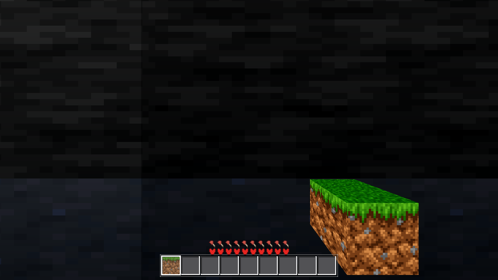
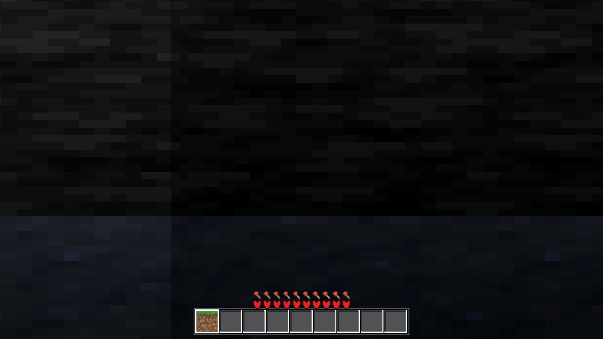
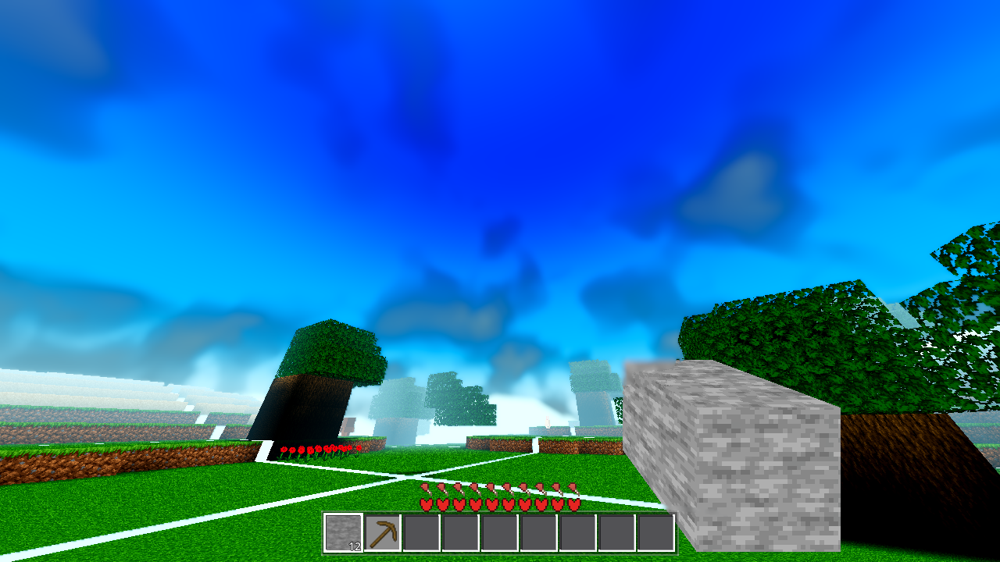

Two live residuals from triage.html, settled with evidence per plan.html. No commits (the fence). The working tree's other-session shader hunks were never touched and never rendered.
The band-A materialization (user settings sim 4 / medium 8 → the triage's ring taxi 5..8,
80–128 m) fills each column SOLID to the un-carved heightmap H (gen_flat
skip=1, he = H — no cave scan), while the full path's ground is the carved
top heff. Where H > heff the band-A mesh is a full-resolution plateau floating
H − heff blocks above the carved ground. Measured per column over the ring at three anchors
(spawn chunk (0,0) + two reachable offsets), seed 44, face 0, R 4000 —
column_heights16 (the skip=1 fill top) vs AweGen.carved_tops (the
full path's own per-column heff, the independent C++ reference the farab gate
itself re-pointed at). This number is recorded here for BOTH tickets to use — the
generation-side ticket at the head of the queue tracks the same defect and owns any fix;
no generation code was changed.
| Measure | Value |
|---|---|
| columns sampled (3 anchors × 208-chunk ring × 256) | 159,744 |
| columns with the fill above the carved top | 2,597 — 1.63 % |
| per-anchor rate | (0,0): 273/53,248 = 0.51 % · (6,−9): 1,221/53,248 = 2.29 % · (−11,4): 1,103/53,248 = 2.07 % |
| per-taxi rate (all anchors) | taxi 5: 151/30,720 = 0.49 % · taxi 6: 383/36,864 = 1.04 % · taxi 7: 890/43,008 = 2.07 % · taxi 8: 1,173/49,152 = 2.39 % |
| max fill-top − carved-top delta | 91 blocks at world (−91, 147, −48) — the fill tops the column at y 147, the carved ground is at y 56 |
Raw probe output (the probe is a temporary SceneTree script, run via --script
from .scratch/AC-0394/census_bandA.gd — no tree pollution; code embedded below):
BAND_A_CENSUS { "seed": 44, "anchors": [[0, 0], [6, -9], [-11, 4]], "cols": 159744,
"un_carved_above_carved_top": 2597, "rate_pct": 1.63, "max_delta": 91,
"max_col": [-91, 147, -48],
"per_taxi": { 8: { "cols": 49152, "bad": 1173, "max_delta": 68 },
7: { "cols": 43008, "bad": 890, "max_delta": 91 },
6: { "cols": 36864, "bad": 383, "max_delta": 91 },
5: { "cols": 30720, "bad": 151, "max_delta": 57 } } }
CENSUS_ANCHOR anchor=[0,0] cols=53248 bad=273 rate=0.5127%
CENSUS_ANCHOR anchor=[6,-9] cols=53248 bad=1221 rate=2.2930%
CENSUS_ANCHOR anchor=[-11,4] cols=53248 bad=1103 rate=2.0714%
Is it visible from the ground at the user's settings? YES — and it is bigger than the
triage estimated. The band-A ring (80–128 m) sits far inside the user's fog 332 / edge
400 — the fog barely tints it at that range. A full-resolution plateau that is un-carved
where the ground below is carved shows as exactly "terrain floating in the air": 1.63 % of
columns on average (0.51–2.29 % by location — the carver's strength varies, so a spawn
neighbourhood can read clean while a walk of a few chunks lands in a 2 %+ pocket), and the
worst column carries a 91-block-thick slab (the triage's local window had estimated
~29 max on ~0.25 % — both numbers were window-limited; this ring census supersedes them).
The rate grows with distance (taxi 5 → 8: 0.49 % → 2.39 %). At 100 m, a 10-block
feature subtends ~6° on a ~47° vertical FOV — plainly visible. This is a live cause of the
user's symptom (b) independent of the deleted haze bridge (C1, gone in bce6053): the
user will still see floating slabs on the new build. The fix (for the coordinator to
assign — the generation-side ticket already tracks this defect and owns the code):
materialize band-A columns to the full path's CARVED top instead of the heightmap H — the
same per-column carved value AC-0387's far lane already computes (carved_tops
/ gen_flat skip=0 heff), sourced either by running the carve in the band-A lane
or by carrying the payload on the band-A landing (the AC-0388 comment at
gen.cpp:4608 notes the skip paths currently carry nothing). I did not touch it.
Every viewmodel material set no_depth_test = true, so the held item drew OVER
terrain — the hand read as floating at the correct (user-ordered, AC-0097) 0.33 scale.
Fix: a new look switch viewmodel_occlude, DEFAULT OFF (conservative).
The user reported the item's SIZE, not the occlusion, so the un-asked look change defaults
to the pre-change always-on-top behaviour — the AC-0205/AC-0398 default rule. ON re-enables
the depth TEST on every viewmodel material (fist / box / cross / sprite material / the
tool child materials — the whole _vm_mats registry, plus the
held_sprite node flag kept coherent for the toolpose arm's read); the depth
WRITE stays DEPTH_DRAW_DISABLED in both states (the hand still never blocks
the depth of anything behind it — the AC-0067/AC-0097 write-side intent is untouched).
| Change | Where |
|---|---|
DEFAULTS "viewmodel_occlude": false + _clamp
AnalogTune.sanitize_bool branch (no apply step — live read, the
cloud_deck/limb_space pattern) | godot/autoload/settings.gd |
Settings-page CheckBox "Held item: occluded by terrain" (after the cloud_volume
row), the sync line, the _on_vm_occ_toggled handler |
godot/ui/menu.gd |
(a) _ready: AWECRAFT_VMOCC=<0|1> env preload — written
to Settings.values WITHOUT save (the AWECRAFT_RAMPS pattern; the viewmodel is
the player's, so the preload rides player.gd, not world.gd). (b)
_process: one per-frame _vm_occ_sync() — reads the live value and
re-applies no_depth_test on a setting change or registry growth (a
material created after an apply — the per-item / tool materials — must receive the flag;
this second condition was caught by the first ON render, see deviations). (c)
_build_held: one apply at construction so the first frame is right. |
godot/player/player.gd |
| One clause in the §2 Settings line (the look-switch convention, new key noted). | godot/ARCHITECTURE.md |
Diff: 4 files, +100/−1. held_mesh.gd untouched (its _base_mat
stays the always-on-top source; the live flag is the switch's job). Conservative default
proven at gate level: toolpose asserts the shipped depth state and stays green
unmodified (depth_ok: true, scale_ok: true).
Every frame came from a separate git worktree at the current commit
a39c6e9 ("AC-0403: three clean valgrind passes…"), with ONLY this ticket's three
hunks copied in (player.gd, settings.gd, menu.gd) +
the main tree's godot/bin/libchunkio.so (the AC-0403 guard build — this ticket
owes no C++ change). The other session's dirty shader files (fluid_anim, satellite_body,
chunk_lit_*) are ABSENT from the frames by construction — i.e. every frame is exactly the
diff that will ship, and does not describe the dirty tree. All runs:
xvfb-run + VK_ICD_FILENAMES=…/lvp_icd.json +
--rendering-driver vulkan, 1280,720, and every log carries the Forward+ boot
line Vulkan 1.4.318 - Forward+ - Using Device #0: Unknown - llvmpipe (LLVM 20.1.8,
256 bits). Proxy renderer — evidence of geometry/occlusion/layout, not the shipped
Windows look (AC-0391).
The fix, A/B on the arm's own 0.4 m wall fixture (AWECRAFT_LOGIC=wallshot,
AWECRAFT_WALL_SHOTS=block — a stone wall 0.4 m in front of the eye, the held
block 0.3 m BEHIND the wall face, the user's exact AC-0067 scenario):
| Switch OFF (the default — conservative) | Switch ON (AWECRAFT_VMOCC=1) | |
|---|---|---|
| RESULT (material state) | block_depth_on: false (the depth TEST disabled — today's behaviour) | block_depth_on: true (the depth TEST enabled — the fix) |
| Frame |  |  |
| Reading | the held block draws over the wall (the defect, preserved as the default look) | the held block is occluded by the terrain — the frame is wall-only where the block was |
The item is still visible against the sky (switch ON). Menu-boot snapshot path
(no AWECRAFT_LOGIC), dirt held (the user's tan item), camera pitched ~31° up:

The held block renders complete — nothing closer than it — with its upper part against
open sky (the depth test kills closer terrain, never sky). Companion frame, same switch
state, dirt held at the arm's auto aim spot (item visible against terrain, unoccluded):
captures/ac0394-sky-held-item-switch-on.png. (The aimed run's
_placed.png byproduct is the AWECRAFT_AIM branch's documented
player.place() second shot — not evidence, kept for provenance.)
Stated limitation: the user's fog 332 / edge 400 was not reproduced in a render —
R25 cannot settle in budget on this software-Vulkan box (the AC-0391 class; R4 was used).
The occlusion behaviour is fog-independent (depth buffer, not fog), and the C1 haze-ring
question stays answered by AC-0404's committed descent frames (the ring is gone in
bce6053) + the census above. The wallshot region census
(block_vm_nonstone 29,664 → 29,913) is insensitive here — the wall renders
darker than the arm's _is_stone predicate under software Forward+, so nearly the
whole region counts as non-stone in BOTH states; the pixel census is the arm's, the FRAMES
are the evidence, and the arm was not modified (pristine).
| Gate | Process exit | Census (gate_census.py) | Reading |
|---|---|---|---|
| G0 headless load (final tree) | rc 0 (paired check — the AC-0403 UAF exits 139 on a clean log) | 0 SCRIPT / 0 SHADER | PASS |
SMOKE battery player;interact;light;fluids | rc 0 | 0 / 0 | battery ok: true |
PROBE toolpose (default state, before AND after the sentinel fix) | rc 0 / rc 0 | 0 / 0 | ok: true, depth_ok: true (the conservative default keeps all four depth flags), scale_ok: true (0.33/0.33), all four tools green |
PROBE held | rc 0 | 0 / 0 | box_ok: false (tint_top_ok) — PRE-EXISTING: identical on the pristine a39c6e9 worktree (below); arm-side staleness, not this change |
| genhash (final tree) | rc 0 | 0 / 0 | 25/25 lines, byte-identical to the AC-0408 reference (and AC-0398 / AC-0384-r8) — generation untouched |
Pristine A/B (pre-existing drift, not regressions): a second worktree at
a39c6e9 WITHOUT any of this ticket's hunks reproduced the SMOKE anomalies:
interact place_ok: false, target_cell [8,140,8] (the standing row's
AC-0314 value was [8,141,8]/true) and held box_ok: false — both byte-similar to
the main-tree readings, and genhash is byte-identical on both trees, so the drift is
post-AC-0314 arm-side staleness (the spawn column's top moved with the terrain rebases; the
grass-top tint expectation is stale). Findings for the coordinator: re-measure the
player/interact/held standing rows — none are owed by this ticket, which touches none of
those paths.
_vm_mats size (re-apply on registry growth, not only on value change);
toolpose re-run green; the ON render re-done. One render slot consumed by the throwaway.AWECRAFT_CAM=sky preset via the AWECRAFT_HELD branch lands
on the arm's auto aim spot (a ground view, main.gd:829-846 returns before any
cam handling) — the sky-behind-item shot therefore used AWECRAFT_AIM (explicit
pose) + the selected item; the item in that frame is the AIM branch's stone (the
AWECRAFT_FPV_ITEM hook sits inside the skipped auto-aim block) — stone is the
ticket's own held item anyway; the tan dirt appears in the companion frame.--script from .scratch/AC-0394/
(outside the tree — harness.gd pristine, no probe left in the tree); it is
preserved at .scratch/AC-0394/census_bandA.gd and embedded below for the
generation-side ticket.extends SceneTree
# AC-0394 residual one — band-A un-carved fill census (skip=1 fill top vs the
# full path's carved top, the farab reference). Pure generation, no world/mesh/render.
func _initialize() -> void:
var seed := 44
var H := 384
var sea := 126
var face := 0
var R := 4000.0
if not ClassDB.class_exists("AweGen"):
printerr("BAND_A_CENSUS AweGen missing")
quit(1)
return
var g = ClassDB.instantiate("AweGen")
var anchors := [Vector2i(0, 0), Vector2i(6, -9), Vector2i(-11, 4)]
var total := 0
var bad := 0
var max_delta := 0
var max_col := Vector3i(-1, -1, -1)
var per_taxi := {}
for a in anchors:
var a_total := 0
var a_bad := 0
for tz in range(-8, 9):
for tx in range(-8, 9):
var taxi := maxi(absi(tx), absi(tz))
if taxi < 5:
continue
var cx: int = a.x + tx
var cz: int = a.y + tz
var hs: PackedByteArray = g.column_heights16(cx, cz, seed, H)
var ct: PackedByteArray = g.carved_tops(cx, cz, seed, H, sea, face, R)
for i in 256:
var hh := int(hs[2 * i]) | (int(hs[2 * i + 1]) << 8)
var he := int(ct[3 * i]) | (int(ct[3 * i + 1]) << 8)
total += 1
a_total += 1
var row: Array = per_taxi.get(taxi, [0, 0, 0])
row[0] += 1
if hh > he:
bad += 1
a_bad += 1
row[1] += 1
var d := hh - he
row[2] = maxi(row[2], d)
if d > max_delta:
max_delta = d
max_col = Vector3i(cx * 16 + (i % 16), hh, cz * 16 + (i / 16))
per_taxi[taxi] = row
print("CENSUS_ANCHOR anchor=[%d,%d] cols=%d bad=%d rate=%.4f%%" % [a.x, a.y, a_total, a_bad, 100.0 * a_bad / float(a_total)])
var anchor_list := []
for ax in anchors:
anchor_list.append([ax.x, ax.y])
var out := {
"seed": seed,
"anchors": anchor_list,
"cols": total,
"un_carved_above_carved_top": bad,
"rate_pct": roundf(10000.0 * float(bad) / float(total)) / 100.0,
"max_delta": max_delta,
"max_col": [max_col.x, max_col.y, max_col.z],
"per_taxi": {},
}
for t in per_taxi:
out["per_taxi"][t] = {"cols": per_taxi[t][0], "bad": per_taxi[t][1], "max_delta": per_taxi[t][2]}
print("BAND_A_CENSUS " + str(out))
quit(0)
TASKS.yaml edits (fence).harness.gd (pristine), main.gd, game.gd,
drop.gd, debug.gd, the other session's dirty shader files, or
held_mesh.gd.shaderforce, r50) — the coordinator's._is_stone predicate was not re-baselined (arm pristine; the
region metric is documented as insensitive under software Forward+, the frames carry the
evidence).| File | What it shows | State |
|---|---|---|
captures/ac0394-wall-switch-off-default.png | 0.4 m wall, held block drawn ON TOP (the defect — preserved as the default look) | switch OFF (default), a39c6e9 + hunks |
captures/ac0394-wall-switch-on-occluded.png | same scene, held block OCCLUDED by the wall (the fix) | switch ON, a39c6e9 + hunks |
captures/ac0394-sky-held-dirt-aimed-switch-on.png | held block complete, upper part against open sky | switch ON, a39c6e9 + hunks |
captures/ac0394-sky-held-item-switch-on.png | tan dirt held, visible against terrain (companion) | switch ON, a39c6e9 + hunks |
captures/ac0394-sky-held-dirt-aimed-switch-on_placed.png | the AWECRAFT_AIM branch's documented place() byproduct (provenance only) | switch ON, a39c6e9 + hunks |
Gate logs: .scratch/AC-0394-*.log (g0-final, g0, smoke, genhash-final,
genhash, toolpose, toolpose2, held, census, wall-off, wall-on, sky-on, sky-aim,
pristine-interact, pristine-held, wt-import). Render worktree removed after the last frame.